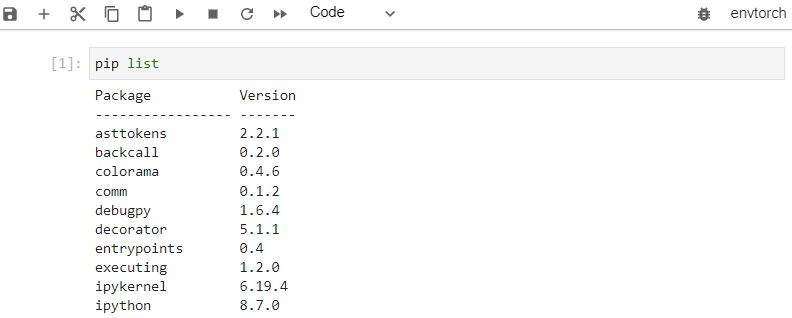

-
Öncelikle bir sanal ortamın (virtual environment) yaratılması gerekir.
python -m venv envforMLKurulan sanal ortamın "mutlaka" aktiflenmesi gerekir. Örneğin D:\Workspace klasöründe envforML ortamının yaratıldığını varsayalım. Aşağıdaki kodu çalıştırırsak çıktı bir alttaki gibi olacaktır. Yani sanal ortam içine girilmiştir.
envforML\Scripts\activate(envforML) D:\Workspace>Ortam aktifleştirildikten sonra (sanal ortam içine girildikten sonra) "Jupyter lab" yada "Jupyter notebook" için sanal ortam (virtual environment - kernel) tanımlaması için ipykernel'in kurulu olması gerekir. "ipykernel'in" kurulumu için:
pip install ipykernelArtık Sanal ortamı Jupyter'e ekleyebiliriz :
ipython kernel install --user --name=envforMLInstalled kernelspec envforML in C:\Users\userxyz\AppData\Roaming\jupyter\kernels\envforML -
Jupyter'de önyüzden seçilebilen kernellerin listesi:
jupyter kernelspec listAvailable kernels: python3 C:\Users\userxyz\AppData\Roaming\Python\Python39\site-packages\ipykernel\resources env_torch C:\Users\userxyz\AppData\Roaming\jupyter\kernels\env_torch envforml C:\Users\userxyz\AppData\Roaming\jupyter\kernels\envformlC:\Users\userxyz\AppData\Roaming\jupyter\kernels\envforml klasörüne gidildiğinde orada bulunan kernel.json dosyası istenirse edit edilebilir. Dosyanın içeriği şu şekildedir:
{ "argv": [ "c:\\python39\\python.exe", "-m", "ipykernel_launcher", "-f", "{connection_file}" ], "display_name": "envforML", "language": "python", "metadata": { "debugger": true } }Burada "display_name": "envforML" özelliği değiştirilirse Jupyter'e yansıyacaktır
-
Bir kernelin Jupyter'den kaldırılması (uninstall) için aşağıdaki komut kulllanılır.
jupyter kernelspec uninstall env_torchKernel specs to remove: env_torch C:\Users\userxyz\AppData\Roaming\jupyter\kernels\env_torch Remove 1 kernel specs [y/N]: y [RemoveKernelSpec] Removed C:\Users\userxyz\AppData\Roaming\jupyter\kernels\env_torchKernel'in jupyterden kaldırılması "sanal ortamın" silindiği anlamına gelmez. Sanal ortam diskte kurulduğu yerde kalacaktır. Sadece jupyter ile olan bağı koparılmış oluyor.
-
Ek olarak bazı muhtemelen hataların önüne geçmek için interaktif widget'ların oluşturulmasını sağlayan ipywidgets paketinin kurulmasında fayda vardır.
pip install ipywidgets -
Seçilen bir "Kernel"in içindeki python paketlerini görmek için şu komut kullanılır:
pip list -
Bir NLP ortamı için gerekli olabilecek başlıca kütüphanelerin kurulum komutu şu şekildedir
pip list